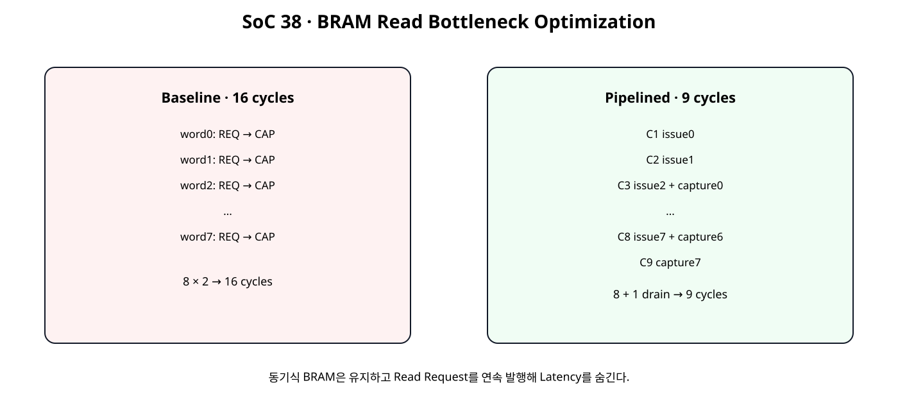
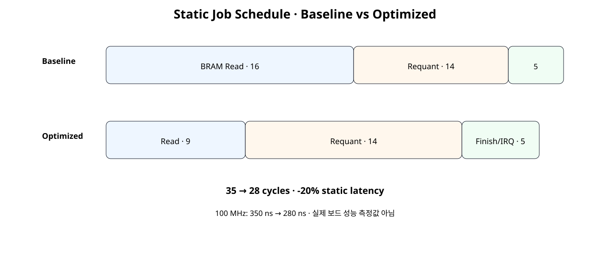
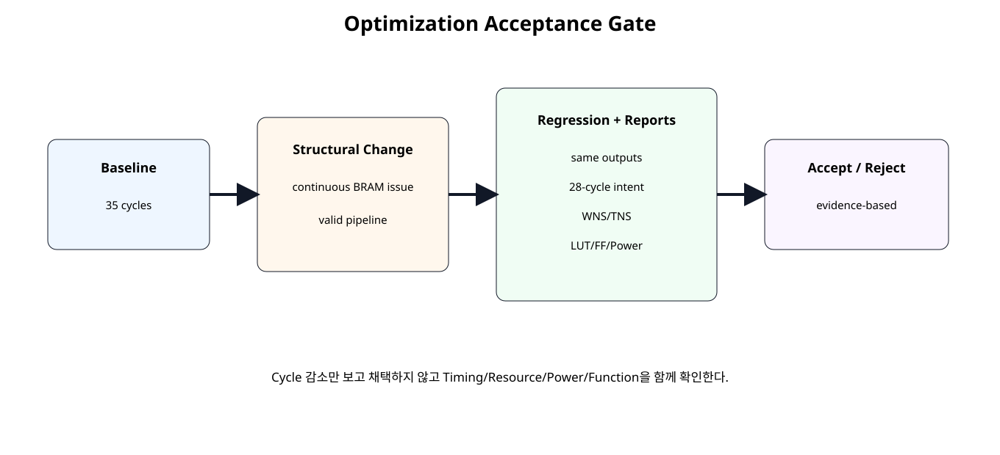

전체 학습 위치
이번 장의 목표

원본 보기 ↗
Baseline 보존
SoC 37에서 만든 Baseline RTL과 성능 기준을 수정하지 않는다. Baseline과 Optimized Design을 같은 Device, Clock, Tool 조건으로 따로 구현해 비교한다.
Bottleneck 후보
| 구간 | Static Cycle | 현재 판단 |
|---|---|---|
| BRAM Read | 16 | 가장 큰 단일 구간 |
| Requant | 14 | 다음 후보 |
| Finish/IRQ | 5 | 작은 구간 |
실측이 없으므로 “실제 최종 Bottleneck”이라고 단정하지 않고 정적 구조상 첫 최적화 후보로 선택한다.
Baseline Read 구조
원본 보기 ↗
문제 원인
동기식 BRAM 자체가 문제가 아니라 다음 Address를 미리 넣지 않아 Read Latency 동안 Interface가 쉬는 것이 문제다.
Optimized Read 구조
동기식 BRAM은 유지
Asynchronous Memory로 바꾸지 않는다. FPGA Block RAM의 장점을 유지하고 요청을 Pipeline하여 Latency를 숨긴다.
Request Pipelining
issue_index_q가 0~7을 매 Clock 진행하면서 새로운 BRAM Address를 연속 발행한다.
Valid Pipeline
read_valid_pipe_q는 어느 Clock의 Address Request가 현재 bram_rdata_i에 대응하는지 추적한다. Address와 Data의 시간 관계를 상태 추측이 아니라 Valid Pipeline으로 표현한다.
BRAM_READ_LATENCY
실제 BMG Port-B Output Latency가 달라지면 Parameter도 맞춰야 한다. 현재 28-cycle 기준은 1-cycle synchronous read 구성이다.
Cycle Schedule

원본 보기 ↗
35 → 28 cycles
Optimized → 9 + 14 + 5 → 28 cycles
Latency와 Throughput
| Metric | Baseline | Optimized |
|---|---|---|
| Static Job Latency | 350 ns | 280 ns |
| Static Latency 변화 | 기준 | -20.0% |
| Upper jobs/s | 2.857 M | 3.571 M |
| Upper Throughput 변화 | 기준 | +25.0% |
모두 구조상 계산값이며 실제 CPU↔NPU Throughput이 아니다.
Static Reference
SoC38 STATIC OPTIMIZATION COMPARISON
clock = 100 MHz
baseline read = 16 cycles, total = 35 cycles (350.0 ns)
fast read = 9 cycles, total = 28 cycles (280.0 ns)
saved = 7 cycles
static latency reduction = 20.0%
baseline upper jobs/s = 2,857,142.857
optimized upper jobs/s = 3,571,428.571
static upper throughput gain = 25.0%
ASSUMPTION:
- synchronous BRAM Port-B read latency = 1 clock
- no extra optional BMG output pipeline beyond this model
- same 100 MHz target
NOT MEASURED:
- WNS/TNS
- resource delta
- power delta
- MicroBlaze V/ISR latency
- board throughput
SOC38 STATIC OPTIMIZATION REFERENCE: PASS
Spreadsheet runtime warmup failed during python startup
Traceback (most recent call last):
File "/tmp/tmp.L2TH2Y5coc/artifact_tool_v2-2.8.22/artifact_tool/patches/warm_spreadsheet_runtime_on_startup.py", line 26, in warm_spreadsheet_runtime_on_startup
File "/tmp/tmp.L2TH2Y5coc/artifact_tool_v2-2.8.22/artifact_tool/spreadsheet_warmup.py", line 772, in warm_spreadsheet_runtime
File "/tmp/tmp.L2TH2Y5coc/artifact_tool_v2-2.8.22/artifact_tool/rpc/connection.py", line 37, in get_or_create_client
File "/tmp/tmp.L2TH2Y5coc/artifact_tool_v2-2.8.22/artifact_tool/rpc/daemon.py", line 124, in start_daemon
TimeoutError: Timed out waiting for artifact tool daemon socket. Set ARTIFACT_TOOL_RPC_DAEMON_STARTUP_TIMEOUT_S=<seconds> to increase the limit.변경 범위
유지 RTL
SoC 37 Baseline 파일을 그대로 포함해 Optimized RTL과 직접 비교할 수 있게 한다. 기능적으로 관계없는 파일을 함께 수정하지 않는다.
Baseline Engine
module tensor_job_engine (
input wire clk,
input wire resetn,
input wire start_i,
input wire [11:0] input_base_i,
input wire [11:0] output_base_i,
input wire [15:0] length_words_i,
input wire signed [31:0] bias_ch0_i,
input wire signed [31:0] bias_ch1_i,
input wire signed [15:0] mult_ch0_i,
input wire signed [15:0] mult_ch1_i,
input wire [5:0] shift_ch0_i,
input wire [5:0] shift_ch1_i,
input wire signed [15:0] zp_ch0_i,
input wire signed [15:0] zp_ch1_i,
output wire busy_o,
output reg done_o,
output reg error_o,
output reg bram_en_o,
output reg [3:0] bram_we_o,
output reg [11:0] bram_addr_o,
output reg [31:0] bram_wdata_o,
input wire [31:0] bram_rdata_i,
output reg [15:0] read_word_count_o,
output reg [15:0] write_word_count_o
);
// Current SoC 34 teaching kernel accepts exactly 8 input words.
// Descriptor validation is performed by the controller before START.
localparam [3:0] ST_IDLE = 4'd0;
localparam [3:0] ST_READ_REQ = 4'd1;
localparam [3:0] ST_READ_CAPTURE = 4'd2;
localparam [3:0] ST_START_REQUANT = 4'd3;
localparam [3:0] ST_WAIT_RESULT = 4'd4;
localparam [3:0] ST_WRITE_CH0 = 4'd5;
localparam [3:0] ST_WRITE_CH1 = 4'd6;
localparam [3:0] ST_DONE = 4'd7;
reg [3:0] state_q;
reg [3:0] read_index_q;
reg [127:0] acc_ch0_batch_q;
reg [127:0] acc_ch1_batch_q;
reg requant_start_q;
wire requant_busy_w;
wire requant_done_w;
wire requant_result_valid_w;
wire [31:0] q_ch0_batch_w;
wire [31:0] q_ch1_batch_w;
wire [7:0] saturation_count_w;
assign busy_o =
(state_q != ST_IDLE) &&
(state_q != ST_DONE);
requantize_batch2x4_serial u_requant_batch (
.clk(clk),
.resetn(resetn),
.start_i(requant_start_q),
.acc_ch0_batch_i(acc_ch0_batch_q),
.acc_ch1_batch_i(acc_ch1_batch_q),
.bias_ch0_i(bias_ch0_i),
.bias_ch1_i(bias_ch1_i),
.mult_ch0_i(mult_ch0_i),
.mult_ch1_i(mult_ch1_i),
.shift_ch0_i(shift_ch0_i),
.shift_ch1_i(shift_ch1_i),
.zp_ch0_i(zp_ch0_i),
.zp_ch1_i(zp_ch1_i),
.busy_o(requant_busy_w),
.done_o(requant_done_w),
.result_valid_o(requant_result_valid_w),
.q_ch0_batch_o(q_ch0_batch_w),
.q_ch1_batch_o(q_ch1_batch_w),
.saturation_count_o(saturation_count_w)
);
always @(*) begin
bram_en_o = 1'b0;
bram_we_o = 4'b0000;
bram_addr_o = 12'h000;
bram_wdata_o = 32'h0000_0000;
case (state_q)
ST_READ_REQ: begin
bram_en_o = 1'b1;
bram_we_o = 4'b0000;
bram_addr_o =
input_base_i +
{read_index_q, 2'b00};
end
ST_WRITE_CH0: begin
bram_en_o = 1'b1;
bram_we_o = 4'b1111;
bram_addr_o = output_base_i;
bram_wdata_o = q_ch0_batch_w;
end
ST_WRITE_CH1: begin
bram_en_o = 1'b1;
bram_we_o = 4'b1111;
bram_addr_o = output_base_i + 12'd4;
bram_wdata_o = q_ch1_batch_w;
end
default: begin
end
endcase
end
always @(posedge clk) begin
if (!resetn) begin
state_q <= ST_IDLE;
read_index_q <= 4'd0;
acc_ch0_batch_q <= 128'd0;
acc_ch1_batch_q <= 128'd0;
requant_start_q <= 1'b0;
done_o <= 1'b0;
error_o <= 1'b0;
read_word_count_o <= 16'd0;
write_word_count_o <= 16'd0;
end else begin
requant_start_q <= 1'b0;
done_o <= 1'b0;
case (state_q)
ST_IDLE: begin
if (start_i) begin
if (length_words_i != 16'd8) begin
error_o <= 1'b1;
done_o <= 1'b1;
end else begin
error_o <= 1'b0;
read_index_q <= 4'd0;
acc_ch0_batch_q <= 128'd0;
acc_ch1_batch_q <= 128'd0;
read_word_count_o <= 16'd0;
write_word_count_o <= 16'd0;
state_q <= ST_READ_REQ;
end
end
end
ST_READ_REQ: begin
state_q <= ST_READ_CAPTURE;
end
ST_READ_CAPTURE: begin
read_word_count_o <=
read_word_count_o + 16'd1;
case (read_index_q)
4'd0: acc_ch0_batch_q[31:0] <= bram_rdata_i;
4'd1: acc_ch0_batch_q[63:32] <= bram_rdata_i;
4'd2: acc_ch0_batch_q[95:64] <= bram_rdata_i;
4'd3: acc_ch0_batch_q[127:96] <= bram_rdata_i;
4'd4: acc_ch1_batch_q[31:0] <= bram_rdata_i;
4'd5: acc_ch1_batch_q[63:32] <= bram_rdata_i;
4'd6: acc_ch1_batch_q[95:64] <= bram_rdata_i;
default:
acc_ch1_batch_q[127:96] <= bram_rdata_i;
endcase
if (read_index_q == 4'd7) begin
state_q <= ST_START_REQUANT;
end else begin
read_index_q <=
read_index_q + 4'd1;
state_q <= ST_READ_REQ;
end
end
ST_START_REQUANT: begin
if (!requant_busy_w) begin
requant_start_q <= 1'b1;
state_q <= ST_WAIT_RESULT;
end
end
ST_WAIT_RESULT: begin
if (requant_result_valid_w) begin
state_q <= ST_WRITE_CH0;
end
end
ST_WRITE_CH0: begin
write_word_count_o <=
write_word_count_o + 16'd1;
state_q <= ST_WRITE_CH1;
end
ST_WRITE_CH1: begin
write_word_count_o <=
write_word_count_o + 16'd1;
state_q <= ST_DONE;
end
ST_DONE: begin
done_o <= 1'b1;
state_q <= ST_IDLE;
end
default: begin
error_o <= 1'b1;
state_q <= ST_IDLE;
end
endcase
end
end
endmodule
Optimized Engine
module tensor_job_engine_pipelined_read #(
parameter integer BRAM_READ_LATENCY = 1
) (
input wire clk,
input wire resetn,
input wire start_i,
input wire [11:0] input_base_i,
input wire [11:0] output_base_i,
input wire [15:0] length_words_i,
input wire signed [31:0] bias_ch0_i,
input wire signed [31:0] bias_ch1_i,
input wire signed [15:0] mult_ch0_i,
input wire signed [15:0] mult_ch1_i,
input wire [5:0] shift_ch0_i,
input wire [5:0] shift_ch1_i,
input wire signed [15:0] zp_ch0_i,
input wire signed [15:0] zp_ch1_i,
output wire busy_o,
output reg done_o,
output reg error_o,
output reg bram_en_o,
output reg [3:0] bram_we_o,
output reg [11:0] bram_addr_o,
output reg [31:0] bram_wdata_o,
input wire [31:0] bram_rdata_i,
output reg [15:0] read_word_count_o,
output reg [15:0] write_word_count_o
);
// ------------------------------------------------------------
// SoC 38 · Pipelined BRAM Read Optimization
// ------------------------------------------------------------
//
// Baseline:
// READ_REQ -> READ_CAPTURE -> READ_REQ -> READ_CAPTURE ...
// 8 words -> 16 cycles
//
// Optimized:
// issue word0
// issue word1 + wait/capture pipeline
// issue word2 + capture word0
// ...
// drain final read
//
// With BRAM_READ_LATENCY=1:
// 8 words -> 9 cycles
//
// Important:
// - The BRAM remains synchronous.
// - This design does NOT remove a BRAM output register.
// - It pipelines requests so the read latency is hidden after startup.
// - If the actual BMG Port-B read latency is changed, set
// BRAM_READ_LATENCY to match the configured synchronous output latency.
// - BRAM_READ_LATENCY must be >= 1.
localparam [2:0] ST_IDLE = 3'd0;
localparam [2:0] ST_READ_STREAM = 3'd1;
localparam [2:0] ST_START_REQUANT = 3'd2;
localparam [2:0] ST_WAIT_RESULT = 3'd3;
localparam [2:0] ST_WRITE_CH0 = 3'd4;
localparam [2:0] ST_WRITE_CH1 = 3'd5;
localparam [2:0] ST_DONE = 3'd6;
reg [2:0] state_q;
reg [3:0] issue_index_q;
reg [3:0] capture_index_q;
reg issue_done_q;
reg [127:0] acc_ch0_batch_q;
reg [127:0] acc_ch1_batch_q;
reg requant_start_q;
// One bit per configured BRAM output-latency stage.
// Example BRAM_READ_LATENCY=1:
// issue_read_w -> read_valid_pipe_q[0] -> capture on next clock
reg [BRAM_READ_LATENCY-1:0] read_valid_pipe_q;
integer valid_stage;
wire issue_read_w;
wire capture_valid_w;
assign issue_read_w =
(state_q == ST_READ_STREAM) &&
!issue_done_q;
assign capture_valid_w =
read_valid_pipe_q[BRAM_READ_LATENCY-1];
wire requant_busy_w;
wire requant_done_w;
wire requant_result_valid_w;
wire [31:0] q_ch0_batch_w;
wire [31:0] q_ch1_batch_w;
wire [7:0] saturation_count_w;
assign busy_o =
(state_q != ST_IDLE) &&
(state_q != ST_DONE);
requantize_batch2x4_serial u_requant_batch (
.clk(clk),
.resetn(resetn),
.start_i(requant_start_q),
.acc_ch0_batch_i(acc_ch0_batch_q),
.acc_ch1_batch_i(acc_ch1_batch_q),
.bias_ch0_i(bias_ch0_i),
.bias_ch1_i(bias_ch1_i),
.mult_ch0_i(mult_ch0_i),
.mult_ch1_i(mult_ch1_i),
.shift_ch0_i(shift_ch0_i),
.shift_ch1_i(shift_ch1_i),
.zp_ch0_i(zp_ch0_i),
.zp_ch1_i(zp_ch1_i),
.busy_o(requant_busy_w),
.done_o(requant_done_w),
.result_valid_o(requant_result_valid_w),
.q_ch0_batch_o(q_ch0_batch_w),
.q_ch1_batch_o(q_ch1_batch_w),
.saturation_count_o(saturation_count_w)
);
// ------------------------------------------------------------
// BRAM interface.
// ------------------------------------------------------------
always @(*) begin
bram_en_o = 1'b0;
bram_we_o = 4'b0000;
bram_addr_o = 12'h000;
bram_wdata_o = 32'h0000_0000;
case (state_q)
ST_READ_STREAM: begin
if (!issue_done_q) begin
bram_en_o = 1'b1;
bram_we_o = 4'b0000;
bram_addr_o =
input_base_i +
{issue_index_q, 2'b00};
end
end
ST_WRITE_CH0: begin
bram_en_o = 1'b1;
bram_we_o = 4'b1111;
bram_addr_o = output_base_i;
bram_wdata_o = q_ch0_batch_w;
end
ST_WRITE_CH1: begin
bram_en_o = 1'b1;
bram_we_o = 4'b1111;
bram_addr_o = output_base_i + 12'd4;
bram_wdata_o = q_ch1_batch_w;
end
default: begin
end
endcase
end
// ------------------------------------------------------------
// Read-valid pipeline.
//
// This tracks when a previously-issued synchronous BRAM read becomes
// safe to capture into the job-engine batch registers.
// ------------------------------------------------------------
always @(posedge clk) begin
if (!resetn) begin
read_valid_pipe_q <=
{BRAM_READ_LATENCY{1'b0}};
end else begin
read_valid_pipe_q[0] <=
issue_read_w;
for (
valid_stage = 1;
valid_stage < BRAM_READ_LATENCY;
valid_stage = valid_stage + 1
) begin
read_valid_pipe_q[valid_stage] <=
read_valid_pipe_q[valid_stage - 1];
end
end
end
// ------------------------------------------------------------
// Main state machine.
// ------------------------------------------------------------
always @(posedge clk) begin
if (!resetn) begin
state_q <= ST_IDLE;
issue_index_q <= 4'd0;
capture_index_q <= 4'd0;
issue_done_q <= 1'b0;
acc_ch0_batch_q <= 128'd0;
acc_ch1_batch_q <= 128'd0;
requant_start_q <= 1'b0;
done_o <= 1'b0;
error_o <= 1'b0;
read_word_count_o <= 16'd0;
write_word_count_o <= 16'd0;
end else begin
requant_start_q <= 1'b0;
done_o <= 1'b0;
case (state_q)
ST_IDLE: begin
if (start_i) begin
if (length_words_i != 16'd8) begin
error_o <= 1'b1;
done_o <= 1'b1;
end else begin
error_o <= 1'b0;
issue_index_q <= 4'd0;
capture_index_q <= 4'd0;
issue_done_q <= 1'b0;
acc_ch0_batch_q <= 128'd0;
acc_ch1_batch_q <= 128'd0;
read_word_count_o <= 16'd0;
write_word_count_o <= 16'd0;
state_q <= ST_READ_STREAM;
end
end
end
ST_READ_STREAM: begin
// One new address is presented every clock until word 7.
if (issue_read_w) begin
if (issue_index_q == 4'd7) begin
issue_done_q <= 1'b1;
end else begin
issue_index_q <=
issue_index_q + 4'd1;
end
end
// After the initial latency, one word is captured per clock.
if (capture_valid_w) begin
read_word_count_o <=
read_word_count_o + 16'd1;
case (capture_index_q)
4'd0: acc_ch0_batch_q[31:0] <= bram_rdata_i;
4'd1: acc_ch0_batch_q[63:32] <= bram_rdata_i;
4'd2: acc_ch0_batch_q[95:64] <= bram_rdata_i;
4'd3: acc_ch0_batch_q[127:96] <= bram_rdata_i;
4'd4: acc_ch1_batch_q[31:0] <= bram_rdata_i;
4'd5: acc_ch1_batch_q[63:32] <= bram_rdata_i;
4'd6: acc_ch1_batch_q[95:64] <= bram_rdata_i;
default:
acc_ch1_batch_q[127:96] <= bram_rdata_i;
endcase
if (capture_index_q == 4'd7) begin
state_q <= ST_START_REQUANT;
end else begin
capture_index_q <=
capture_index_q + 4'd1;
end
end
end
ST_START_REQUANT: begin
if (!requant_busy_w) begin
requant_start_q <= 1'b1;
state_q <= ST_WAIT_RESULT;
end
end
ST_WAIT_RESULT: begin
if (requant_result_valid_w) begin
state_q <= ST_WRITE_CH0;
end
end
ST_WRITE_CH0: begin
write_word_count_o <=
write_word_count_o + 16'd1;
state_q <= ST_WRITE_CH1;
end
ST_WRITE_CH1: begin
write_word_count_o <=
write_word_count_o + 16'd1;
state_q <= ST_DONE;
end
ST_DONE: begin
done_o <= 1'b1;
state_q <= ST_IDLE;
end
default: begin
error_o <= 1'b1;
state_q <= ST_IDLE;
end
endcase
end
end
endmodule
Optimized Top
module npu_full_accelerator_fastread_ip (
(* X_INTERFACE_INFO = "xilinx.com:signal:clock:1.0 s_axi_aclk CLK" *)
(* X_INTERFACE_PARAMETER = "XIL_INTERFACENAME s_axi_aclk, ASSOCIATED_BUSIF S_AXI:BRAM, ASSOCIATED_RESET s_axi_aresetn" *)
input wire s_axi_aclk,
(* X_INTERFACE_INFO = "xilinx.com:signal:reset:1.0 s_axi_aresetn RST" *)
(* X_INTERFACE_PARAMETER = "XIL_INTERFACENAME s_axi_aresetn, POLARITY ACTIVE_LOW" *)
input wire s_axi_aresetn,
// --------------------------------------------------------
// AXI4-Lite Control Plane
// --------------------------------------------------------
(* X_INTERFACE_INFO = "xilinx.com:interface:aximm:1.0 S_AXI AWADDR" *)
input wire [7:0] s_axi_awaddr,
(* X_INTERFACE_INFO = "xilinx.com:interface:aximm:1.0 S_AXI AWVALID" *)
input wire s_axi_awvalid,
(* X_INTERFACE_INFO = "xilinx.com:interface:aximm:1.0 S_AXI AWREADY" *)
output wire s_axi_awready,
(* X_INTERFACE_INFO = "xilinx.com:interface:aximm:1.0 S_AXI WDATA" *)
input wire [31:0] s_axi_wdata,
(* X_INTERFACE_INFO = "xilinx.com:interface:aximm:1.0 S_AXI WSTRB" *)
input wire [3:0] s_axi_wstrb,
(* X_INTERFACE_INFO = "xilinx.com:interface:aximm:1.0 S_AXI WVALID" *)
input wire s_axi_wvalid,
(* X_INTERFACE_INFO = "xilinx.com:interface:aximm:1.0 S_AXI WREADY" *)
output wire s_axi_wready,
(* X_INTERFACE_INFO = "xilinx.com:interface:aximm:1.0 S_AXI BRESP" *)
output wire [1:0] s_axi_bresp,
(* X_INTERFACE_INFO = "xilinx.com:interface:aximm:1.0 S_AXI BVALID" *)
output wire s_axi_bvalid,
(* X_INTERFACE_INFO = "xilinx.com:interface:aximm:1.0 S_AXI BREADY" *)
input wire s_axi_bready,
(* X_INTERFACE_INFO = "xilinx.com:interface:aximm:1.0 S_AXI ARADDR" *)
input wire [7:0] s_axi_araddr,
(* X_INTERFACE_INFO = "xilinx.com:interface:aximm:1.0 S_AXI ARVALID" *)
input wire s_axi_arvalid,
(* X_INTERFACE_INFO = "xilinx.com:interface:aximm:1.0 S_AXI ARREADY" *)
output wire s_axi_arready,
(* X_INTERFACE_INFO = "xilinx.com:interface:aximm:1.0 S_AXI RDATA" *)
output wire [31:0] s_axi_rdata,
(* X_INTERFACE_INFO = "xilinx.com:interface:aximm:1.0 S_AXI RRESP" *)
output wire [1:0] s_axi_rresp,
(* X_INTERFACE_INFO = "xilinx.com:interface:aximm:1.0 S_AXI RVALID" *)
output wire s_axi_rvalid,
(* X_INTERFACE_INFO = "xilinx.com:interface:aximm:1.0 S_AXI RREADY" *)
input wire s_axi_rready,
// --------------------------------------------------------
// Native BRAM Data Plane
// --------------------------------------------------------
(* X_INTERFACE_INFO = "xilinx.com:interface:bram:1.0 BRAM CLK" *)
output wire bram_clk_o,
(* X_INTERFACE_INFO = "xilinx.com:interface:bram:1.0 BRAM RST" *)
output wire bram_rst_o,
(* X_INTERFACE_INFO = "xilinx.com:interface:bram:1.0 BRAM EN" *)
output wire bram_en_o,
(* X_INTERFACE_INFO = "xilinx.com:interface:bram:1.0 BRAM WE" *)
output wire [3:0] bram_we_o,
(* X_INTERFACE_INFO = "xilinx.com:interface:bram:1.0 BRAM ADDR" *)
output wire [11:0] bram_addr_o,
(* X_INTERFACE_INFO = "xilinx.com:interface:bram:1.0 BRAM DIN" *)
output wire [31:0] bram_wdata_o,
(* X_INTERFACE_INFO = "xilinx.com:interface:bram:1.0 BRAM DOUT" *)
input wire [31:0] bram_rdata_i,
// --------------------------------------------------------
// Interrupt
// --------------------------------------------------------
(* X_INTERFACE_INFO = "xilinx.com:signal:interrupt:1.0 irq INTERRUPT" *)
(* X_INTERFACE_PARAMETER = "XIL_INTERFACENAME irq, SENSITIVITY LEVEL_HIGH" *)
output wire irq
);
// Pure Shell / Wrapper:
// AXI bridge + control/descriptor/IRQ + job engine + BRAM clock/reset adapter.
wire reg_wr_en;
wire [7:0] reg_wr_addr;
wire [31:0] reg_wr_data;
wire [3:0] reg_wr_strb;
wire [7:0] reg_rd_addr;
wire [31:0] reg_rd_data;
wire job_start;
wire [11:0] active_input_base;
wire [11:0] active_output_base;
wire [15:0] active_length_words;
wire signed [31:0] active_bias_ch0;
wire signed [31:0] active_bias_ch1;
wire signed [15:0] active_mult_ch0;
wire signed [15:0] active_mult_ch1;
wire [5:0] active_shift_ch0;
wire [5:0] active_shift_ch1;
wire signed [15:0] active_zp_ch0;
wire signed [15:0] active_zp_ch1;
wire engine_busy;
wire engine_done;
wire engine_error;
wire [15:0] read_word_count;
wire [15:0] write_word_count;
wire ctrl_busy;
wire done_sticky;
wire error_sticky;
wire [7:0] error_code;
wire [31:0] job_id;
wire [1:0] irq_enable;
wire [1:0] irq_status;
axi4lite_reg_bridge u_axi_bridge (
.s_axi_aclk(s_axi_aclk),
.s_axi_aresetn(s_axi_aresetn),
.s_axi_awaddr(s_axi_awaddr),
.s_axi_awvalid(s_axi_awvalid),
.s_axi_awready(s_axi_awready),
.s_axi_wdata(s_axi_wdata),
.s_axi_wstrb(s_axi_wstrb),
.s_axi_wvalid(s_axi_wvalid),
.s_axi_wready(s_axi_wready),
.s_axi_bresp(s_axi_bresp),
.s_axi_bvalid(s_axi_bvalid),
.s_axi_bready(s_axi_bready),
.s_axi_araddr(s_axi_araddr),
.s_axi_arvalid(s_axi_arvalid),
.s_axi_arready(s_axi_arready),
.s_axi_rdata(s_axi_rdata),
.s_axi_rresp(s_axi_rresp),
.s_axi_rvalid(s_axi_rvalid),
.s_axi_rready(s_axi_rready),
.reg_wr_en_o(reg_wr_en),
.reg_wr_addr_o(reg_wr_addr),
.reg_wr_data_o(reg_wr_data),
.reg_wr_strb_o(reg_wr_strb),
.reg_rd_addr_o(reg_rd_addr),
.reg_rd_data_i(reg_rd_data)
);
npu_full_control_irq u_control (
.clk(s_axi_aclk),
.resetn(s_axi_aresetn),
.wr_en_i(reg_wr_en),
.wr_addr_i(reg_wr_addr),
.wr_data_i(reg_wr_data),
.wr_strb_i(reg_wr_strb),
.rd_addr_i(reg_rd_addr),
.rd_data_o(reg_rd_data),
.job_start_o(job_start),
.active_input_base_o(active_input_base),
.active_output_base_o(active_output_base),
.active_length_words_o(active_length_words),
.active_bias_ch0_o(active_bias_ch0),
.active_bias_ch1_o(active_bias_ch1),
.active_mult_ch0_o(active_mult_ch0),
.active_mult_ch1_o(active_mult_ch1),
.active_shift_ch0_o(active_shift_ch0),
.active_shift_ch1_o(active_shift_ch1),
.active_zp_ch0_o(active_zp_ch0),
.active_zp_ch1_o(active_zp_ch1),
.engine_busy_i(engine_busy),
.engine_done_i(engine_done),
.engine_error_i(engine_error),
.read_word_count_i(read_word_count),
.write_word_count_i(write_word_count),
.busy_o(ctrl_busy),
.done_sticky_o(done_sticky),
.error_sticky_o(error_sticky),
.error_code_o(error_code),
.job_id_o(job_id),
.irq_o(irq),
.irq_enable_o(irq_enable),
.irq_status_o(irq_status)
);
tensor_job_engine_pipelined_read #(
.BRAM_READ_LATENCY(1)
) u_engine (
.clk(s_axi_aclk),
.resetn(s_axi_aresetn),
.start_i(job_start),
.input_base_i(active_input_base),
.output_base_i(active_output_base),
.length_words_i(active_length_words),
.bias_ch0_i(active_bias_ch0),
.bias_ch1_i(active_bias_ch1),
.mult_ch0_i(active_mult_ch0),
.mult_ch1_i(active_mult_ch1),
.shift_ch0_i(active_shift_ch0),
.shift_ch1_i(active_shift_ch1),
.zp_ch0_i(active_zp_ch0),
.zp_ch1_i(active_zp_ch1),
.busy_o(engine_busy),
.done_o(engine_done),
.error_o(engine_error),
.bram_en_o(bram_en_o),
.bram_we_o(bram_we_o),
.bram_addr_o(bram_addr_o),
.bram_wdata_o(bram_wdata_o),
.bram_rdata_i(bram_rdata_i),
.read_word_count_o(read_word_count),
.write_word_count_o(write_word_count)
);
bram_clock_reset_adapter u_bram_clock_reset (
.clk_i(s_axi_aclk),
.resetn_i(s_axi_aresetn),
.bram_clk_o(bram_clk_o),
.bram_rst_o(bram_rst_o)
);
endmodule
Top Shell/Wrapper
Optimized Top도 기능 로직을 직접 넣지 않고 기존 Control/Bridge와 새 Engine Instance만 연결한다.
Functional Regression
Cycle이 줄었다고 기능이 바뀌면 최적화가 아니다. 기존 Job0/Job1 결과, Descriptor Error, IRQ/W1C를 모두 유지해야 한다.
JOB0
JOB1
Counter / JOB_ID
DONE / ERROR IRQ
DONE IRQ와 W1C, 잘못된 Descriptor의 ERROR IRQ를 그대로 유지한다. Read Scheduler 변경이 Control Plane 의미를 바꾸지 않아야 한다.
Cycle Regression
`timescale 1ns / 1ps
module tb_soc38_fastread_regression;
logic clk = 1'b0;
logic resetn = 1'b0;
logic [7:0] awaddr = 8'h00;
logic awvalid = 1'b0;
wire awready;
logic [31:0] wdata = 32'h0000_0000;
logic [3:0] wstrb = 4'h0;
logic wvalid = 1'b0;
wire wready;
wire [1:0] bresp;
wire bvalid;
logic bready = 1'b1;
logic [7:0] araddr = 8'h00;
logic arvalid = 1'b0;
wire arready;
wire [31:0] rdata;
wire [1:0] rresp;
wire rvalid;
logic rready = 1'b1;
logic cpu_mem_en_i = 1'b0;
logic [3:0] cpu_mem_we_i = 4'h0;
logic [11:0] cpu_mem_addr_i = 12'h000;
logic [31:0] cpu_mem_wdata_i = 32'h0000_0000;
wire [31:0] cpu_mem_rdata_o;
wire irq_o;
integer check_count = 0;
integer error_count = 0;
integer cycle_counter = 0;
integer engine_start_cycle = -1;
integer irq_cycle = -1;
logic engine_busy_d = 1'b0;
always @(posedge clk) begin
cycle_counter = cycle_counter + 1;
// Wait until NBA updates settle before observing DUT pulses.
#1;
if (
dut.u_npu.engine_busy &&
!engine_busy_d
) begin
engine_start_cycle = cycle_counter;
end
engine_busy_d = dut.u_npu.engine_busy;
if (
(irq_o === 1'b1) &&
(irq_cycle < 0)
) begin
irq_cycle = cycle_counter;
end
end
always #5 clk = ~clk;
npu_full_accelerator_fastread_sim_top dut (
.clk(clk),
.resetn(resetn),
.s_axi_awaddr(awaddr),
.s_axi_awvalid(awvalid),
.s_axi_awready(awready),
.s_axi_wdata(wdata),
.s_axi_wstrb(wstrb),
.s_axi_wvalid(wvalid),
.s_axi_wready(wready),
.s_axi_bresp(bresp),
.s_axi_bvalid(bvalid),
.s_axi_bready(bready),
.s_axi_araddr(araddr),
.s_axi_arvalid(arvalid),
.s_axi_arready(arready),
.s_axi_rdata(rdata),
.s_axi_rresp(rresp),
.s_axi_rvalid(rvalid),
.s_axi_rready(rready),
.cpu_mem_en_i(cpu_mem_en_i),
.cpu_mem_we_i(cpu_mem_we_i),
.cpu_mem_addr_i(cpu_mem_addr_i),
.cpu_mem_wdata_i(cpu_mem_wdata_i),
.cpu_mem_rdata_o(cpu_mem_rdata_o),
.irq_o(irq_o)
);
task automatic check_true(
input string name,
input bit condition
);
begin
check_count = check_count + 1;
if (!condition) begin
error_count = error_count + 1;
$error("CHECK FAIL: %s", name);
end else begin
$display("CHECK PASS: %s", name);
end
end
endtask
task automatic check_eq32(
input string name,
input logic [31:0] actual,
input logic [31:0] expected
);
begin
check_count = check_count + 1;
if (actual !== expected) begin
error_count = error_count + 1;
$error(
"CHECK FAIL: %s actual=0x%08h expected=0x%08h",
name,
actual,
expected
);
end else begin
$display(
"CHECK PASS: %s = 0x%08h",
name,
actual
);
end
end
endtask
task automatic axi_write(
input [7:0] address,
input [31:0] data,
input integer order
);
bit aw_done;
bit w_done;
integer timeout;
begin
aw_done = 0;
w_done = 0;
@(negedge clk);
awaddr = address;
wdata = data;
wstrb = 4'hF;
case (order)
0: begin
awvalid = 1'b1;
wvalid = 1'b1;
end
1: begin
awvalid = 1'b1;
wvalid = 1'b0;
end
default: begin
awvalid = 1'b0;
wvalid = 1'b1;
end
endcase
timeout = 0;
while (!(aw_done && w_done)) begin
@(posedge clk);
// (변경) READY가 갱신되기 전 상승 에지의 handshake를 관측한다.
if (awvalid && awready)
aw_done = 1;
if (wvalid && wready)
w_done = 1;
@(negedge clk);
if (aw_done)
awvalid = 1'b0;
if (w_done)
wvalid = 1'b0;
if (
(order == 1) &&
aw_done &&
!w_done
)
wvalid = 1'b1;
if (
(order == 2) &&
w_done &&
!aw_done
)
awvalid = 1'b1;
timeout = timeout + 1;
if (timeout > 40)
$fatal(1, "AXI write timeout");
end
timeout = 0;
while (!bvalid) begin
@(posedge clk);
#1;
timeout = timeout + 1;
if (timeout > 40)
$fatal(1, "AXI BVALID timeout");
end
check_true(
"BRESP OKAY",
bresp == 2'b00
);
@(posedge clk);
#1;
end
endtask
task automatic axi_read(
input [7:0] address,
output [31:0] data
);
integer timeout;
begin
@(negedge clk);
araddr = address;
arvalid = 1'b1;
timeout = 0;
while (!arready) begin
@(posedge clk);
#1;
timeout = timeout + 1;
if (timeout > 40)
$fatal(1, "AXI ARREADY timeout");
end
@(posedge clk);
#1;
timeout = 0;
while (!rvalid) begin
@(posedge clk);
#1;
timeout = timeout + 1;
if (timeout > 40)
$fatal(1, "AXI RVALID timeout");
end
data = rdata;
check_true(
"RRESP OKAY",
rresp == 2'b00
);
@(negedge clk);
arvalid = 1'b0;
@(posedge clk);
#1;
end
endtask
task automatic mem_write32(
input [11:0] address,
input [31:0] data
);
begin
@(negedge clk);
cpu_mem_en_i = 1'b1;
cpu_mem_we_i = 4'hF;
cpu_mem_addr_i = address;
cpu_mem_wdata_i = data;
@(posedge clk);
#1;
@(negedge clk);
cpu_mem_en_i = 1'b0;
cpu_mem_we_i = 4'h0;
cpu_mem_addr_i = 12'h000;
cpu_mem_wdata_i = 32'h0000_0000;
end
endtask
task automatic mem_read32(
input [11:0] address,
output [31:0] data
);
begin
@(negedge clk);
cpu_mem_en_i = 1'b1;
cpu_mem_we_i = 4'h0;
cpu_mem_addr_i = address;
@(posedge clk);
#1;
@(negedge clk);
cpu_mem_en_i = 1'b0;
cpu_mem_addr_i = 12'h000;
data = cpu_mem_rdata_o;
end
endtask
task automatic wait_irq_high;
integer timeout;
begin
timeout = 0;
while (irq_o !== 1'b1) begin
@(posedge clk);
// (변경) 같은 시각의 #1 성능 모니터보다 뒤에서 IRQ를 관측한다.
#2;
timeout = timeout + 1;
if (timeout > 300)
$fatal(1, "IRQ did not assert");
end
end
endtask
initial begin
reg [31:0] rd;
repeat (5) @(posedge clk);
resetn = 1'b1;
// --------------------------------------------------------
// 1. CPU fills Tensor BRAM through Port A.
// --------------------------------------------------------
mem_write32(12'h200, 32'd16);
mem_write32(12'h204, 32'd32);
mem_write32(12'h208, 32'd48);
mem_write32(12'h20C, 32'd64);
mem_write32(12'h210, 32'd32);
mem_write32(12'h214, 32'd64);
mem_write32(12'h218, 32'd96);
mem_write32(12'h21C, 32'd128);
// --------------------------------------------------------
// 2. Program descriptor / parameter / IRQ registers.
// Exercise all three AXI write channel orders.
// --------------------------------------------------------
axi_write(8'h10, 32'h0000_0200, 0);
axi_write(8'h14, 32'h0000_0300, 1);
axi_write(8'h18, 32'd8, 2);
axi_write(8'h20, 32'd0, 0);
axi_write(8'h24, 32'd4, 1);
axi_write(8'h28, 32'h0001_0001, 2);
axi_write(8'h2C, 32'h0001_0003, 0);
axi_write(8'h30, 32'hFFFD_0000, 1);
// Clear stale IRQ and status, then enable DONE/ERROR.
axi_write(8'h4C, 32'h0000_0003, 2);
axi_write(8'h00, 32'h0000_0006, 0);
axi_write(8'h48, 32'h0000_0003, 1);
axi_read(8'h04, rd);
check_true(
"descriptor valid",
(rd & 32'h8) != 0
);
// --------------------------------------------------------
// 3. START and wait for DONE IRQ.
// --------------------------------------------------------
axi_write(8'h00, 32'h0000_0001, 0);
// Wait until BUSY appears.
do begin
axi_read(8'h04, rd);
end while ((rd & 32'h1) == 0);
// Shadow changes while the active job is running.
axi_write(8'h10, 32'h0000_0400, 1);
axi_write(8'h14, 32'h0000_0500, 2);
axi_read(8'h34, rd);
check_eq32(
"ACTIVE_INPUT remains 0x200",
rd,
32'h0000_0200
);
axi_read(8'h38, rd);
check_eq32(
"ACTIVE_OUTPUT remains 0x300",
rd,
32'h0000_0300
);
wait_irq_high();
check_true(
"JOB0 optimized latency = 28 cycles",
(irq_cycle - engine_start_cycle) == 28
);
axi_read(8'h4C, rd);
check_true(
"DONE IRQ pending",
(rd & 32'h1) != 0
);
check_true(
"ERROR IRQ clear",
(rd & 32'h2) == 0
);
// CPU reclaims Tensor Buffer after completion.
mem_read32(12'h300, rd);
check_eq32(
"full integration OUT_CH0",
rd,
32'h2018_1008
);
mem_read32(12'h304, rd);
check_eq32(
"full integration OUT_CH1",
rd,
32'h7F7F_6333
);
axi_read(8'h0C, rd);
check_eq32(
"JOB_ID = 1",
rd,
32'd1
);
axi_read(8'h40, rd);
check_eq32(
"READ_WORD_COUNT = 8",
rd,
32'd8
);
axi_read(8'h44, rd);
check_eq32(
"WRITE_WORD_COUNT = 2",
rd,
32'd2
);
// ISR-equivalent W1C.
axi_write(8'h4C, 32'h0000_0001, 0);
repeat (2) @(posedge clk);
#1;
check_true(
"DONE W1C deasserts IRQ",
irq_o === 1'b0
);
// --------------------------------------------------------
// 4. Second complete job: same hardware, new Tensor buffer.
// --------------------------------------------------------
mem_write32(12'h400, 32'd2);
mem_write32(12'h404, 32'd4);
mem_write32(12'h408, 32'd6);
mem_write32(12'h40C, 32'd8);
mem_write32(12'h410, 32'd4);
mem_write32(12'h414, 32'd8);
mem_write32(12'h418, 32'd12);
mem_write32(12'h41C, 32'd16);
// Shadow addresses already changed to 0x400 / 0x500
// during JOB0. Keep LENGTH=8 and parameters unchanged.
axi_write(8'h18, 32'd8, 2);
axi_write(8'h00, 32'h0000_0006, 0);
axi_write(8'h4C, 32'h0000_0003, 1);
axi_write(8'h48, 32'h0000_0003, 2);
axi_read(8'h04, rd);
check_true(
"JOB1 descriptor valid",
(rd & 32'h8) != 0
);
engine_start_cycle = -1;
irq_cycle = -1;
axi_write(8'h00, 32'h0000_0001, 0);
wait_irq_high();
check_true(
"JOB1 optimized latency = 28 cycles",
(irq_cycle - engine_start_cycle) == 28
);
axi_read(8'h4C, rd);
check_true(
"JOB1 DONE IRQ pending",
(rd & 32'h1) != 0
);
mem_read32(12'h500, rd);
check_eq32(
"JOB1 OUT_CH0",
rd,
32'h0403_0201
);
mem_read32(12'h504, rd);
check_eq32(
"JOB1 OUT_CH1",
rd,
32'h1B15_0F09
);
axi_read(8'h0C, rd);
check_eq32(
"JOB_ID = 2 after second accepted job",
rd,
32'd2
);
axi_read(8'h40, rd);
check_eq32(
"JOB1 READ_WORD_COUNT = 8",
rd,
32'd8
);
axi_read(8'h44, rd);
check_eq32(
"JOB1 WRITE_WORD_COUNT = 2",
rd,
32'd2
);
axi_write(8'h4C, 32'h0000_0001, 1);
repeat (2) @(posedge clk);
#1;
check_true(
"JOB1 W1C deasserts IRQ",
irq_o === 1'b0
);
// --------------------------------------------------------
// 5. Integrated descriptor ERROR IRQ after two good jobs.
// --------------------------------------------------------
axi_write(8'h00, 32'h0000_0006, 1);
axi_write(8'h4C, 32'h0000_0003, 2);
axi_write(8'h48, 32'h0000_0002, 0);
axi_write(8'h10, 32'h0000_0202, 1);
axi_write(8'h14, 32'h0000_0600, 2);
axi_write(8'h18, 32'd8, 0);
axi_write(8'h00, 32'h0000_0001, 1);
wait_irq_high();
axi_read(8'h4C, rd);
check_true(
"descriptor ERROR IRQ pending",
(rd & 32'h2) != 0
);
axi_read(8'h1C, rd);
check_eq32(
"descriptor ERROR_CODE = 2",
rd,
32'd2
);
axi_read(8'h0C, rd);
check_eq32(
"rejected job keeps JOB_ID = 2",
rd,
32'd2
);
axi_write(8'h4C, 32'h0000_0002, 2);
repeat (2) @(posedge clk);
#1;
check_true(
"ERROR W1C deasserts IRQ",
irq_o === 1'b0
);
$display("");
$display("SOC38 CHECK COUNT : %0d", check_count);
$display("SOC38 ERROR COUNT : %0d", error_count);
if (error_count == 0) begin
$display("SOC38 FASTREAD OPTIMIZATION TEST: PASS");
end else begin
$fatal(
1,
"SOC38 FASTREAD OPTIMIZATION TEST: FAIL (%0d errors)",
error_count
);
end
#20;
$finish;
end
endmodule
Post-Route 비교 원칙
조건이 다른 Report끼리 비교하지 않는다.
Baseline Post-Route
# SoC 38 · baseline post-route comparison
# Same device / same 100 MHz constraint / same report set.
set script_dir [file dirname [file normalize [info script]]]
set root_dir [file normalize [file join $script_dir ".."]]
set rtl_dir [file join $root_dir "rtl"]
set out_dir [file normalize [file join $root_dir "reports" "baseline"]]
file mkdir $out_dir
create_project -in_memory -part xc7a35tcpg236-1
foreach f {
requantize_s32_to_s8.v
requantize_batch2x4_serial.v
tensor_job_engine.v
npu_full_control_irq.v
axi4lite_reg_bridge.v
bram_clock_reset_adapter.v
npu_full_accelerator_ip.v
} {
read_verilog [file join $rtl_dir $f]
}
synth_design \
-mode out_of_context \
-top npu_full_accelerator_ip \
-part xc7a35tcpg236-1
create_clock \
-name s_axi_aclk \
-period 10.000 \
[get_ports s_axi_aclk]
report_methodology \
-file [file join $out_dir "01_methodology_post_synth.rpt"]
opt_design
place_design
phys_opt_design
route_design
report_timing_summary \
-delay_type min_max \
-report_unconstrained \
-max_paths 50 \
-file [file join $out_dir "02_timing_summary_post_route.rpt"]
report_utilization \
-hierarchical \
-file [file join $out_dir "03_utilization_post_route.rpt"]
report_clock_utilization \
-file [file join $out_dir "04_clock_utilization_post_route.rpt"]
report_design_analysis \
-setup \
-max_paths 50 \
-logic_level_distribution \
-file [file join $out_dir "05_design_analysis_post_route.rpt"]
report_methodology \
-file [file join $out_dir "06_methodology_post_route.rpt"]
report_drc \
-file [file join $out_dir "07_drc_post_route.rpt"]
report_power \
-file [file join $out_dir "08_power_vectorless_post_route.rpt"]
write_checkpoint \
-force \
[file join $out_dir "soc38_baseline.dcp"]
puts ""
puts "SoC 38 baseline post-route run complete."
puts "Compare reports only under identical constraints and activity assumptions."
Optimized Post-Route
# SoC 38 · optimized fast-read post-route comparison
# Same device / same 100 MHz constraint / same report set.
set script_dir [file dirname [file normalize [info script]]]
set root_dir [file normalize [file join $script_dir ".."]]
set rtl_dir [file join $root_dir "rtl"]
set out_dir [file normalize [file join $root_dir "reports" "optimized"]]
file mkdir $out_dir
create_project -in_memory -part xc7a35tcpg236-1
foreach f {
requantize_s32_to_s8.v
requantize_batch2x4_serial.v
tensor_job_engine_pipelined_read.v
npu_full_control_irq.v
axi4lite_reg_bridge.v
bram_clock_reset_adapter.v
npu_full_accelerator_fastread_ip.v
} {
read_verilog [file join $rtl_dir $f]
}
synth_design \
-mode out_of_context \
-top npu_full_accelerator_fastread_ip \
-part xc7a35tcpg236-1
create_clock \
-name s_axi_aclk \
-period 10.000 \
[get_ports s_axi_aclk]
report_methodology \
-file [file join $out_dir "01_methodology_post_synth.rpt"]
opt_design
place_design
phys_opt_design
route_design
report_timing_summary \
-delay_type min_max \
-report_unconstrained \
-max_paths 50 \
-file [file join $out_dir "02_timing_summary_post_route.rpt"]
report_utilization \
-hierarchical \
-file [file join $out_dir "03_utilization_post_route.rpt"]
report_clock_utilization \
-file [file join $out_dir "04_clock_utilization_post_route.rpt"]
report_design_analysis \
-setup \
-max_paths 50 \
-logic_level_distribution \
-file [file join $out_dir "05_design_analysis_post_route.rpt"]
report_methodology \
-file [file join $out_dir "06_methodology_post_route.rpt"]
report_drc \
-file [file join $out_dir "07_drc_post_route.rpt"]
report_power \
-file [file join $out_dir "08_power_vectorless_post_route.rpt"]
write_checkpoint \
-force \
[file join $out_dir "soc38_optimized.dcp"]
puts ""
puts "SoC 38 optimized fast-read post-route run complete."
puts "Compare reports only under identical constraints and activity assumptions."
Timing 비교
Cycle 감소가 WNS 악화를 정당화하지 않는다. Optimized 구조가 100 MHz Timing을 유지하는지 Post-Route WNS/TNS/WHS/THS를 확인한다.
Resource Trade-off
연속 요청을 위해 Issue/Capture Index와 Valid Pipeline Register가 추가된다. 실제 LUT/FF Delta는 Synthesis/Implementation Report로 기록한다.
Power Trade-off
더 높은 Switching Activity가 생길 수 있으므로 동일 Activity 조건의 Power Report를 비교한다. Vectorless 값은 Board Power가 아니다.
AMD RAM Performance Guidance
AMD UG949는 Block RAM의 Output Pipeline Register가 Clock-to-Output Timing을 개선하며 높은 Clock Frequency에서 중요하다고 설명한다. Dedicated Block 주변 경로도 가능한 Pipelining을 권장한다.
왜 Output Register를 제거하지 않는가
Read Latency 한 Clock을 없애기 위해 Register를 제거하면 Timing Closure가 오히려 불리해질 수 있다. 이번 구조는 Latency를 제거하는 것이 아니라 연속 요청으로 숨긴다.
Acceptance Gate

원본 보기 ↗
비교 기록표
doc/BASELINE_VS_OPTIMIZED.md에서 Static 값과 실제 Vivado/Basys3 측정값을 한 표에 기록한다.
실제 BMG 설정 확인
BRAM_READ_LATENCY와 Cycle 기대값을 같이 수정해야 한다.SoC39 연결
Read 구간 최적화 후 정적 Schedule에서는 Requant 14 cycles가 가장 큰 남은 구간이 된다. SoC 39에서는 Serial Requant Feed의 병렬화 또는 Read/Compute Overlap을 분석한다.
오류 점검
| 오류 | 원인 | 확인 |
|---|---|---|
| 첫 Word가 중복됨 | Valid/Data latency 불일치 | read_valid_pipe |
| 마지막 Word 누락 | Pipeline Drain 부족 | capture_index=7 |
| 28 cycle이 안 나옴 | BMG Read Latency 조건 다름 | BRAM_READ_LATENCY |
| Output 값이 바뀜 | Issue/Capture Index 불일치 | JOB0/JOB1 Regression |
| WNS 악화 | Address/Control Fanout 또는 새 경로 | Design Analysis |
| Cycle만 보고 최적화 채택 | Resource/Power/Timing 무시 | Acceptance Gate |
SoC 38 완료 체크리스트
- [ ] SoC37 Baseline RTL을 보존한다.
- [ ] 16-cycle Read의 Bubble 원인을 설명한다.
- [ ] 동기식 BRAM은 그대로 유지한다.
- [ ] 매 Clock Read Address를 연속 발행한다.
- [ ] Valid Pipeline으로 Data를 정렬한다.
- [ ] BRAM_READ_LATENCY 조건을 명시한다.
- [ ] Static Read 16 → 9 cycles를 계산한다.
- [ ] Static Job 35 → 28 cycles를 계산한다.
- [ ] JOB0/JOB1 결과를 유지한다.
- [ ] IRQ/Descriptor 의미를 유지한다.
- [ ] Baseline/Optimized를 동일 Vivado 조건으로 비교한다.
- [ ] Timing/Resource/Power까지 확인한 뒤 최적화를 채택한다.
공식 문서 및 근거
| 자료 | 확인 항목 |
|---|---|
| AMD UG949 · Performance Considerations When Implementing RAM · 2026.1 | Block RAM Output Pipeline Register와 Timing Closure |
| AMD UG949 · Pipelining Considerations · 2026.1 | Pipelining의 Throughput/Latency Trade-off |
| AMD UG949 · Dedicated Block Optimization · 2026.1 | BRAM/DSP 주변 Pipelining 권장 |
| AMD UG949 · Inferring RAM and ROM · 2026.1 | RAM Inference 권장 방식 |